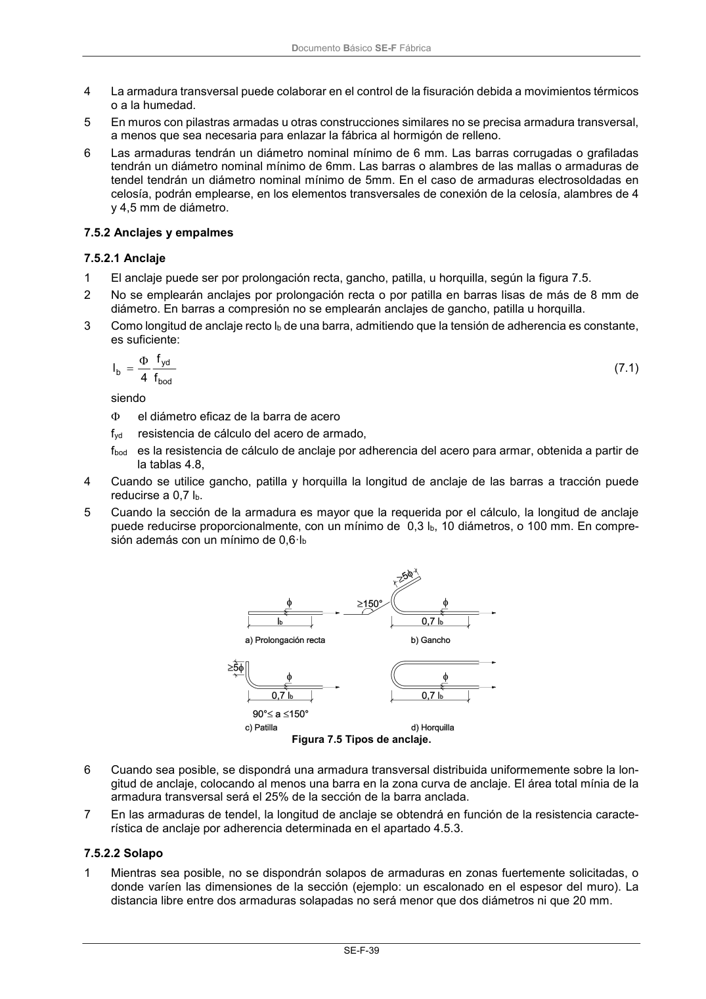

DB-SE-F Fábrica · edición 2019-12-20 · capa oficial
Documento DB-SE-F-oficial · SHA-256 del PDF e3e0805c3b4c307519c26dc34c3fdbf143d842edd013c91b0f52d2c73403d91c
Copia fiel del PDF fuente · Fuente oficial
Ficha de la disposición en la fuente oficial
Formatos: JSON del segmento · Markdown
7.5.2 Anclajes y empalmes 7.5.2.1 Anclaje 7.5.2.1 Anclaje 1 El anclaje puede ser por prolongación recta, gancho, patilla, u horquilla, según la figura 7.5. 2 No se emplearán anclajes por prolongación recta o por patilla en barras lisas de más de 8 mm de diámetro. En barras a compresión no se emplearán anclajes de gancho, patilla u horquilla. 3 Como longitud de anclaje recto lb de una barra, admitiendo que la tensión de adherencia es constante, es suficiente: bod yd b f f 4 l (7.1) siendo el diámetro eficaz de la barra de acero fyd resistencia de cálculo del acero de armado, fbod es la resistencia de cálculo de anclaje por adherencia del acero para armar, obtenida a partir de la tablas 4.8, 4 Cuando se utilice gancho, patilla y horquilla la longitud de anclaje de las barras a tracción puede reducirse a 0,7 lb. 5 Cuando la sección de la armadura es mayor que la requerida por el cálculo, la longitud de anclaje puede reducirse proporcionalmente, con un mínimo de 0,3 lb, 10 diámetros, o 100 mm. En compre- sión además con un mínimo de 0,6·lb Figura 7.5 Tipos de anclaje. 6 Cuando sea posible, se dispondrá una armadura transversal distribuida uniformemente sobre la lon- gitud de anclaje, colocando al menos una barra en la zona curva de anclaje. El área total mínia de la armadura transversal será el 25% de la sección de la barra anclada. 7 En las armaduras de tendel, la longitud de anclaje se obtendrá en función de la resistencia caracte- rística de anclaje por adherencia determinada en el apartado 4.5.3.
